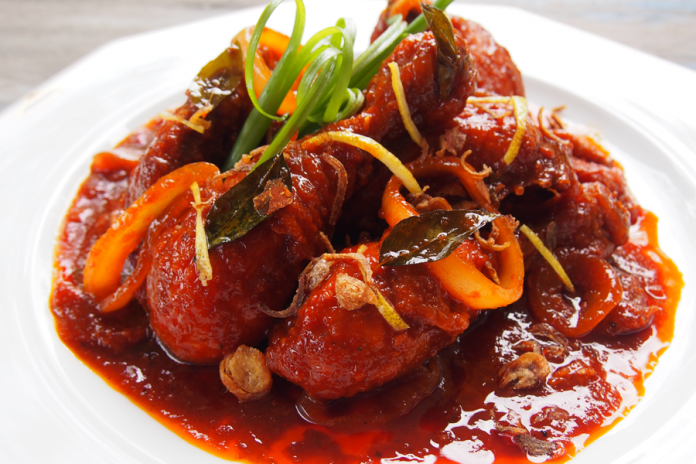

Ayam Masak Merah
Ayam masak merah is a Malaysian and Singaporean chicken dish. The name literally means chicken "red-cooked chicken" in English. Popular in both countries, it is a casserole of chicken pieces in dried chilies sambal. It tends to be a home-cooked dish, so many variations on the recipe exist. So, let's try the recipe!

INGREDIENTS
- 1/2 chicken - cut into 6
- 3 tablespoons ground chili
- 1 teaspoon salt
- 1 tablespoon sugar
- 2 tablespoons chili sauce
- 2 tablespoons tomato sauce
- 1/2 large Holland onion - sliced
- Soup leaves/onions - sprinkle
BLEND
- 1 1/2 large shallot
- 4 cloves garlic
INSTRUCTIONS
- Chicken smeared with salt and turmeric powder. Then fry until cooked. Don't be too dry. Lift and set aside.
- In another pan, heat oil and stir fry the minced shallots and garlic until cooked through.
- Add the ground chilies and stir fry again over low heat until the chilies are cooked through. Add sugar and salt. Stir well.
- Add the tomato sauce and chili sauce. Stir well. Add a little water. Stir again.
- Finally add the sliced onions. Stir until onions are half wilted, add fried chicken.
- Stir well until the onions are wilted. Adjust the taste. May be picked up and served. If there is, you can sprinkle soup leaves or onions.
Note: To make a beautiful colored sambal is to add sugar first after the chili is crispy.